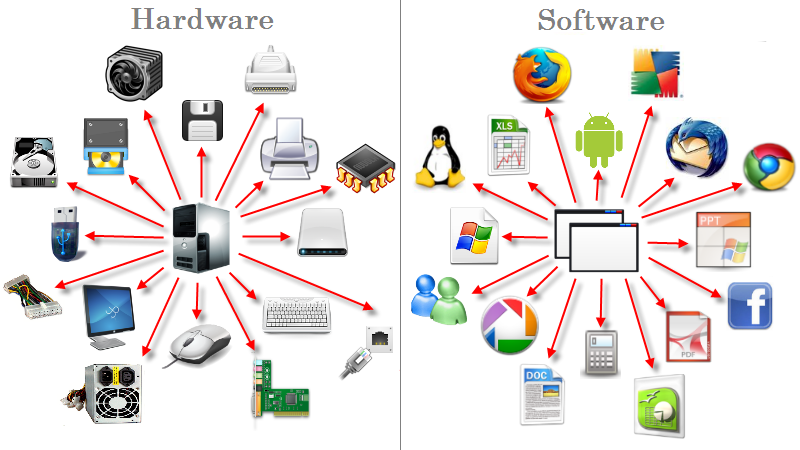

Una computadora es un sistema informático compuesto por dos aspectos básicos:
el hardware, que significa “soporte físico”, y el software, que se refiere a lo intangible o el “programa”.
Los soportes físicos son elementos electrónicos que trabajan conectados para proporcionar datos,
y esos datos son procesados gracias a las instrucciones que proporcionan los programas.
El hardware es como una caja en la que se conectan una serie de dispositivos que procesan información de entrada y de salida.
El software es el conjunto de instrucciones para ejecutar esa información de entrada y salida. Sin las instrucciones del software,
la computadora sería una caja sin utilidad, al igual que lo sería el cuerpo humano sin un cerebro.
Hardware de una computadora:
El hardware hace referencia a los diferentes elementos tangibles de una computadora, y puede ser interno o externo. El hardware interno está conformado principalmente por:
Placa madre (o motherboard):Es la placa principal de cualquier sistema informático al que todos los demás dispositivos se conectan, tanto de manera directa (como los circuitos eléctricos interconectados) como indirecta (a través de puertos USB u otro tipo de conectores).
Procesador:Es la Unidad Central de Procesamiento (CPU), es decir, el cerebro de la computadora que controla todo lo que ejecuta el ordenador y es responsable de realizar los cálculos y la comprensión de datos.
Memoria interna RAM:Es la memoria que almacena información, de manera temporal y rápida, para que la computadora la utilice en el momento. Su capacidad de almacenamiento se mide en unidades llamadas gigabytes (GB). A mayor cantidad de memoria RAM, más rápido puede funcionar la computadora, por ejemplo, para abrir y usar varios programas a la vez.
Memoria interna ROM:Es la memoria que almacena información de manera permanente y que se denomina de “solo lectura”, es decir, el usuario no puede alterar el contenido una vez que se almacenó esa información, solo puede instalarlo o desinstalarlo. La memoria ROM almacena todo lo relacionado con instrucciones o lo que también se denomina BIOS (sistema básico o programa de arranque) y que comprende las instrucciones de cómo se inicia la máquina o cómo funcionan los programas, entre otros.
Placa de video:También conocida como “tarjeta gráfica” es un dispositivo de hardware interno que se conecta a la placa madre y permite que la computadora muestre imágenes en el monitor. Requiere de la instalación de un software para que le indique a la computadora cómo usar esa placa de video.
Placa de sonido:Es un dispositivo de hardware interno que se conecta a la placa madre y se clasifica según los canales que utiliza, por ejemplo, estéreo, cuadrafónico (sonido envolvente), MIDI (conector de uso profesional), entre otros.
Dispositivo de almacenamiento secundario:Es la memoria que almacena datos de manera permanente (o hasta que el usuario los elimine), como documentos, planillas, imágenes, videos, audios, copias de seguridad de los archivos, entre otros.
El hardware externo:
Dispositivos de entrada: Son piezas que reciben datos sin procesar y que la computadora puede procesar a través del correspondiente software. Se dividen en dos categorías: dispositivos de entrada manual, que deben ser operados por el usuario (teclado, mouse, pantalla táctil, micrófono, etc.) y dispositivos de entrada automática, que accionan el ingreso de información por su cuenta, de manera independiente del usuario (lector de banda magnética, reconocimiento de caracteres de tinta magnética, lector de PIN y chip, lector de código de barras, etc.).
Dispositivos de salida: Son piezas que envían hacia afuera los datos procesados por la computadora. Hay dos tipos: de salida temporal (como el monitor, que actualiza constantemente la imagen de salida en la pantalla) y de salida permanente (como la impresora, que reproduce información sobre un papel que perdura como una copia impresa).
Dispositivos periféricos: Son la mayoría de los dispositivos de entrada y de salida que se consideran componentes de hardware externos “no esenciales” porque la computadora puede funcionar sin ellos. Por ejemplo, parlantes, cámara web, teclado, micrófono, impresora, escáner, mouse, joystick, entre otros.
Software de una computadora:
El software es la parte “no física” de la computadora, que existe en forma de códigos que contienen instrucciones para que el hardware sepa qué hacer. Sin estos programas, la mayoría de los dispositivos de hardware no serían útiles. Hay dos tipos:
Software de sistema:Son los programas preinstalados en la computadora, que permiten dar soporte a otros programas instalados por el usuario. Algunos ejemplos son los sistemas operativos (Windows, Mac OS, Linux, BIOS, etc.), los limpiadores de disco, los desfragmentadores de disco, los antivirus, los controladores gráficos, softwares de cifrado, entre otros.
Software de aplicación: Son los programas que no tienen que ver con el funcionamiento del equipo, sino que son instalados por el usuario para realizar funciones determinadas. Por ejemplo, hojas de cálculo (Excel), procesadores de palabras (Word), programas de base de datos (Access), programas de diseño gráfico (Illustrator), navegadores de Internet (Chrome), entre otros.
